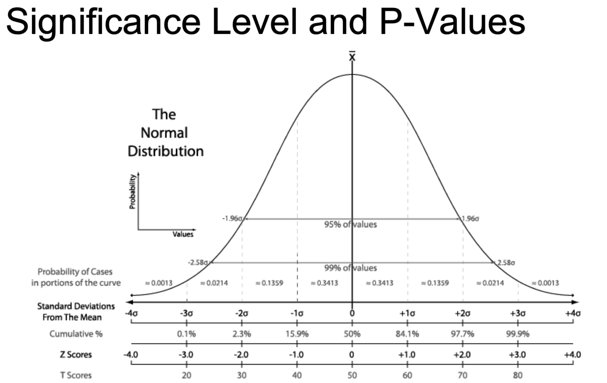

Exploratory Data Analysis
Introduction To Everything
AI/ML/DL
-
Deep Learning (DL) is a subset of Machine Learning (ML). And, ML is a subset of Artificail Intelligence (AI).
-
Artificial Intelligence
: Program that can sense, reason, act and adapt. Its also defined as simulation of inteligent behaviours in computers.
-
Machine Learning
: Algorithms that performance improve as they are exposed to more data over time.
-
Supervised Learning
: Dataset has as a target column. The goal is to make predictions. eg. fraud detection etc.
-
Unsupervised Learning
: Dataset has no target column. The gola is to find the struture of data. eg. customer segmentation etc.
-
Deep Learning
: A subset of Machine Learning where multilayered neural networks learn from vast amounts of data.
-
Features:
attributes of data. And
target
: is the labels of the data.
-
Limitation of ML
: In cases like image classification, where the attributes can be too many, DL allows to find spatial relationship between the features, i.e. spatial relation between the pixels in case of image classification tasks.
-
In classical ML
, Step 1 is to determine features. Step 2 is feed through the model. Step3 is learning and inference.
-
In classical ML, Step 1 is very difficult and the many times the Data Scientist has to be lucky. For ex, for facial recognition problem,
the location of features like nose, eyes etc have to be determined before feeding through the model.
-
DL combines Step 1 and Step 2
. The neural network receives all the pixels as inputs and determines the spatial relationshtip. Intermediate feature engineering is
automatic by the model.
-
Workflow of a typical ML problem
-
Problem Statement:
-
Data Collection:
-
Data Exploration and Preprocessing
-
Modeling
-
Validate
-
Communicate/ Decision Making
-
Terminology:
-
Target: Category or value you are trying to predict
-
Features: Attributes of data
-
Observation/Example: Single row of data
-
Label: Target value of an example. Value on target column
Data Handling, Extraction, Exploration and Feature Engineering
Data Reading
-
Reading csv files:
-
Using pandas and using
pd.read_csv(...)
-
Additional parameters like
sep
or
delim_whiteshape
based on different delimiters
-
Reading json files:
-
pd.read_json(..)
or
pd.read_jsonl(..., lines=True)
.
-
Similar is writing to the file.
-
Reading from SQL databases.
-
sqlite provides a python library; data can be read or manipulated using SQL queries like string.
-
General Steps:
-
Make a connection
-
Define a query
-
Execute
-
Reading from noSQL database
Data Cleaning
-
Main Problems:
-
Lack of data:
-
Too much data:
-
Bad Data
-
Messy Data
-
Duplicate or unnecessary data.
-
Inconsistent text and typos
-
Missing data
-
Outliers
-
Data sourcing issues:
-
Multiple systems
-
Different database types
-
Missing Data
-
Remove data: Entire row or column can be removed. Easy to do, but could make us loose data.
-
Impute data: Replace the missing data with mean, median, null etc.
-
Mask data: Create a category for mising values. For example, users skipping a survey question etc
-
Outliers
-
How to Find Outliers?
-
Use plots: Histogram, Density Plots etc
-
Use statistics: IQR, Standard Deviation
-
Residuals: Standardized, Studentized, Deleted residuals
Difference Between actual value and predicted values is residuals.
-
Standardized Residuals: Residuals divided by standard error.
-
Deleted Residuals: Redisual from fitting model on all data excluding current observation.
-
Studentized or also called Externally Studentized Residuals: Takes deleted residuals and divide by residual
standard error. This means it standardizes deleted residuals.
-
Policies for outliers
-
Remove them.
-
Assign mean or median to the outlier value.
-
Transform the variable. eg. log transform etc
-
Predict what the outlier value could have been; using similar observations to predict likely values. Regression can be used.
-
Simply keep them.
Exploratory Data Analysis
-
Analyse data to summarize inital feel of the data.
-
Identify patterns or summary statistics of the data.
-
Some of the stats are: Average, Max, Correlations
-
Sampling Data
-
Random Sampling: Use
.sample()
in pandas
-
Stratified Sampling: Divide data into groups, and randomly sample each group.
-
Visualization
-
Use pyplot, matplotlib, seaborn, plotly etc
-
scatter plot, histogram, barh,
-
df
.groupby('col').mean().plot()
will plot a line plot
-
pairplot()
is another very useful function.
-
jointplot()
is another very useful function
-
facetgrid()
is another that creates object and can be mapped with the
histogram
using
.map()
function.
-
Feature Engineering
-
Skewed Data can be fized by transformation.
-
Log transform is an example that exposes linear relation between variable when linear relation did not existed before.
-
Adding polynomial features: allows for estimating higher-order relationships. We end up with linear model again.
-
Using
PolynomialFeatures
in sklearn, you can specify degree of the polynomial, fit and transform.
-
Variable Selection
-
Encding: Takes non numerical (categorical) data and transform to numerical data.
-
Data Types:
-
Nominal Data: Categorical data with no order, eg. True, False; Red, Blue, Green
-
Ordinal Data: Categorical data with order, eg, High, Medium, Low
-
Encoding Technique:
-
Binary Encoding: convert values to 1 or 0
-
One hot encding: creates several new variables, but converts the values into binary variables.
-
To convert a categorical columns to one-hot encoding, you can use
pd.get_dummies(df['column'])
.
-
Ordinal encoding: involves converting ordered categories to numerical values by creating one variable that takes integer
equal to the number of categories.
-
They have Implementation in sklearn as well as pandas
-
Feature Scaling
: Adjusting variable scale, allowing comparison of variables with different scales.
-
Standard Scaling: subtract mean and divide by standard deviation.
-
Min-Max Normalization: Convert variables to the range (0,1) by mapping min variable to 0 and max value to 1. Sensitive to
outliers.
-
Robust Scaling: Similar to min-max scaling, but instead of complete dataset, maps the IQR data to 0 and 1.
-
All of these have Implementation in sklearn.
-
find the skew of each col in a df using
df.skew()
function. You can use this to filter the columns that have skew
greater than some limit.
-
To apply log transformation to a column in a dataframe, you can use
df['columns'].apply(np.logp)
.
-
Feature interaction means combine two columns to create a new column. This can be by multiplying, dividing or add/subtract etc of two existing columns.
-
In you want to use linear regression, but the pairplot shows a quadratic relationship of a column with the target variable, create a new variable with powered 2 of the old variable.
The newly created variable will have linear relation with the target variable, making it easy for modeling.
-
You can also use
sklear.preprocessing.PolynomialFeatures()
, and use
fit()
and
transform()
for a better implementation.
-
To get a mean of a column grouped by a category, but maintain the original size, use
df.groupby(['category'])['column'].transform(lambda x:x.mean())
.
What this does is, if the original df has 1300 rows, the new series will have 1300 rows. Row corresponding to same category will be same value, which is the mean value.
Inference Stats and Hypothesis Testing
Estimation and Inference
-
Estimation:
is application of an algorithm. For example, finding an average is
sum of all items/no of items
-
Inference:
is associating accuracy on the estimate. For example, standard error of the average. Gives a better understanding of the distribution.
-
Machine Learning and Inference are similar. Both of them focus on
data generating process
.
-
For the customer churn example, estimation means measuring the impact of each factor in predicting the customer churn; whereas
inference means whether those factors are statistically significant.
Parametric vs Non-parametric
-
Inference is trying to find
Data Generating Process
. Statistical model is a set of possible distribtions or regressions.
-
Parametric model is a type of statistical model that has a finite no of parameters.
-
Example would be a normal distribution, which has a formula with parameters.
-
Most common method of estimating paramters in parametric modeling is Maximum liklihood Estimatin (MLE)
-
Non-parametric model however makes some assumptions. Data does not have to follow any distribtions; i.e.
distribtion free inference
.
-
For example, an example of non-parametric inference is create a CDF using histogram.
Bayesian and Frequentist Statistics
Frequentist
-
concerned with repitition of data; repeated observation of data.
-
Model probabilities with many repitition of the experiment.
-
As much data as possible, and no prior knowledge about the data or distribution.
Bayesian
-
Describes parameters by probability distribution.
-
before seeing any data, a apriori distribtion can be formulated.
After the data is observed the apriori knowledge is updated to give posterior distribtion
-
Both the Bayesian and Frequentist uses same math; but they differ in interpretation.
Hypothesis Testing
-
It is statement about a population parameter.
-
Problem statement starts with two hypotheses: Null Hypothesis (H0) and Alternative Hypothesis (H1).
-
Hypothesis testing procedure will give us rules to decide when to
accept the Null Hypothesis (H0)
and when to
reject the Null Hypothesis and accept alternative Hypothesis
-
In Bayesian testing, we do not get a decision boundary, but a posterior probability. And decide which one is more likely.
Type-1 and Type-2 error
-
Type-1 Error: When
Truth
is H0, and the decision is to
Reject H0
.
-
Type-2 Error: When
Truth
is H1, and the decision is to
Accept H0
.
-
Power of a Test
: 1 - Probability of (Type-2 error).
Significance Levels and p-values
-
Classical frequentist methods.
-
Significance level (alpha)
is chosen before starting computation.
Its a probability threshold below which the null hypothesis will be rejected.
-
We must choose the alpha value beforehand. Otherwise its called
p-hacking
.
-
Common values of alpha is 0.01, 0.05 etc
-
p-value:
is the smallest significance level at which the null hypotheses will be rejected.
-
confidence internal
: is the values of the statistic for which we accpet the null hypothesis.
-

-
Bonferroni Correction:
-
Upon a large number of tests, there is a chance that we will encounter Type-I error.
-
Bonferroni correction means choose p-threshold so that probability of making a Type-1 error is 5%.
-
Typically choose
p-threshold=0.05/(no. of tests)
.
Example Hypothesis Testing - I
-
Problem Statement:
Suppose I predicted 57 coin flips correctly out of 100 total flips. Am I special in being able to predict the flips outcoome?
-
Null Hypothesis
: I am not special.
-
Alternative Hypothesis:
I am in fact special.
-
Solution:
-
Let us pick alpha value of 5% or 0.05.
-
Predicting coin flip is binomial distribution function with parameters
n=100
and
p=0.5
, p- being
the probabiliity of each flip prediction at 50% for a fair coin.
-
Find the probability that someone can predict 57 or lower coin toss using
1-binom.cdf(56,100,0.5)
.
-
The value is 9.7%.
This means probability of predicting 56 or less coin toss accurately is 9.7%
. This is more than
our threshold alpha value of 5%.
-
So, we should accept the NULL hypothesis. I am not special.
Example Hypothesis Testing - II
-
What should be my guessing percentage accuracy to be special?
-
With 5% threshold, I should guess 95% of the flips accurately. This means out of 100 coin toss, I need following accurately:
-
binom.ppf(0.95,100,0.5) = 58%
-
I need to guess more than 58, i.e. at least 59 coin toss accurately.
Correlation and Causation
Two variables can be correlate for various reasons:
-
X causes Y (causation caused correlation)
-
Y causes X (we are mixing things up)
-
X and Y are both caused by some other variable. (There is confounding variable)
-
X and Y are not related; but sample is just unlucky. (Spurious)